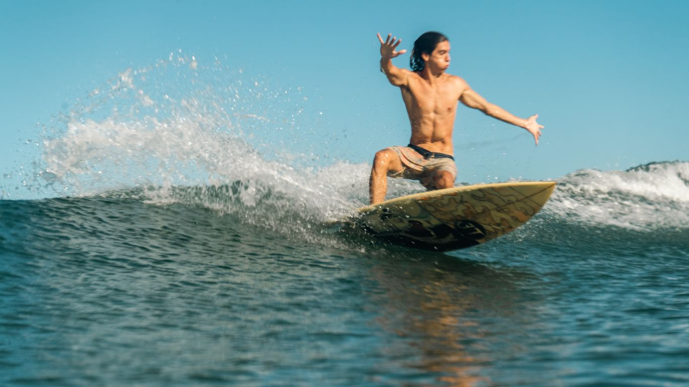
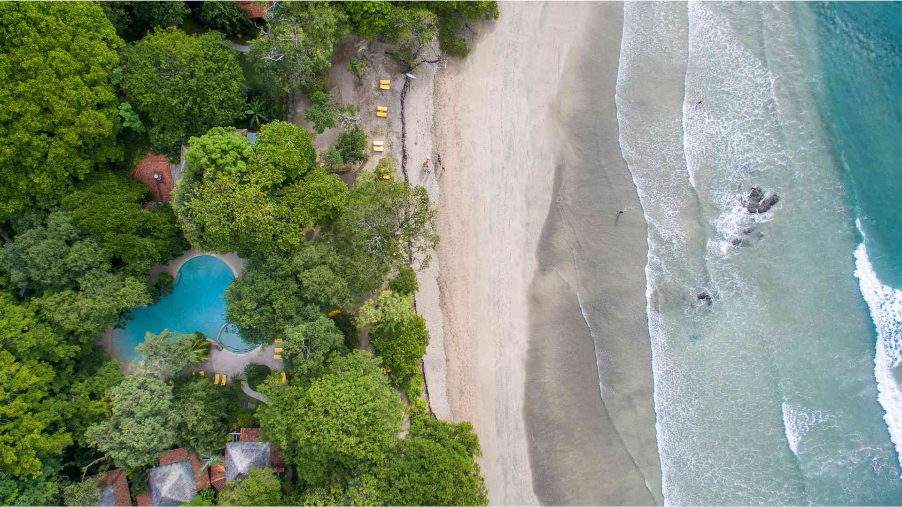
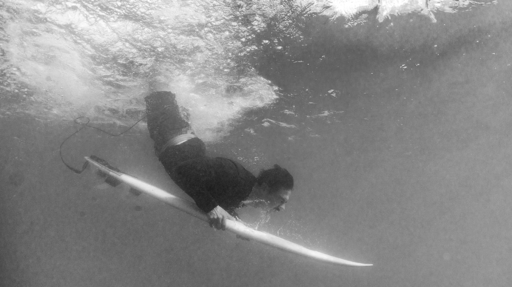
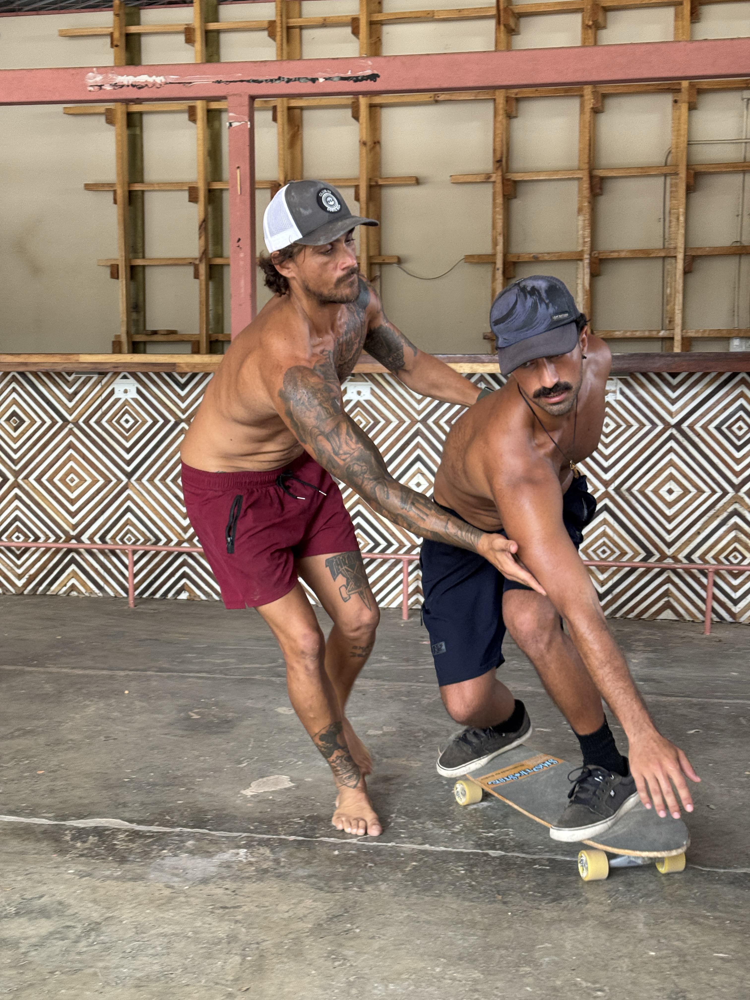

SURF · BIENESTAR · EXPERIENCIAS
La próxima sesión empieza acá.
Elegí una experiencia, conocé todos los detalles y armá una solicitud a tu medida. WavePoint la ordena y la consulta con el encargado local.
Explorar los 11 servicios ↓HECHO EN TAMARINDO
Encontrá tu forma de entrar al agua — o de bajar el ritmo.
Descubrí nuestra selección de servicios y experiencias en Tamarindo. Trabajamos con instructores y fotógrafos locales de confianza.
Cada tarjeta abre una página con fotos, información y un formulario interactivo para preparar tu consulta por WhatsApp.

Alojamiento y experiencias
Armá una estadía a tu medida: dónde dormir, qué surfear y qué sumar a tu viaje.
Ver servicio y armar solicitud ↗
Clases de surf
Una primera ola, mejores bases o una habilidad puntual con instructores locales.
Ver servicio y armar solicitud ↗
Surf coaching
Observación personalizada, objetivos concretos y herramientas para progresar.
Ver servicio y armar solicitud ↗
Surf trip a Roca Bruja
Planificá una salida a uno de los spots más especiales de la costa.
Ver servicio y armar solicitud ↗
Snorkel y catamarán
Explorá bajo el agua, navegá la costa o combiná ambas experiencias.
Ver servicio y armar solicitud ↗
Yoga
Encontrá una práctica que acompañe tu viaje, desde una primera vez.
Ver servicio y armar solicitud ↗
Tours en cuatriciclo — ATV
Recorré los caminos de Guanacaste con una consulta previa de requisitos.
Ver servicio y armar solicitud ↗
Retiros
Surf, descanso, movimiento y comunidad en un mismo viaje.
Ver servicio y armar solicitud ↗
Fotos de surf
Guardá los mejores momentos de tu sesión en imágenes tomadas desde la playa.
Ver servicio y armar solicitud ↗
Fotografía acuática de surf
Imágenes de surf desde dentro del agua, en plena sesión.
Ver servicio y armar solicitud ↗
Clases de surfskate
Practicá giros, estabilidad y fluidez antes de entrar al agua.
Ver servicio y armar solicitud ↗